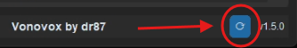
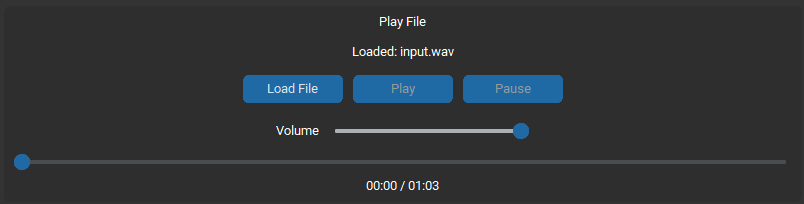
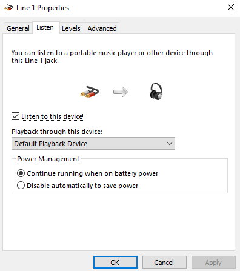

#
Vonovox
Last update: November 10, 2025
#
Introduction
Vonovox is a realtime voice changer that uses RVC for its conversion.
Vonovox was developed by dr87.
RVC does NOT mean realtime voice changer. RVC means Retrieval-based-Voice-Conversion.
#
Is Vonovox Safe?
RVC Models are PyTorch Models, a Python library used for AI. PyTorch uses serialization via Pythons' Pickle Module, converting the model to a file. Since pickle can execute arbitrary code when loading a model, it could be theoretically used for malware, but Vonovox has a built-in feature to prevent code execution along the model. Also, HuggingFace has a Security Scanner which scans for any unsafe pickle exploits and uses also ClamAV for scanning dangerous files.
#
Pros & Cons
The pros & cons are subjective to your necessities.
- Has an active development
- Good Performance, and has even more improvements
- Currently stable
- It doesn't use a Web User Interface, meaning that it is less prone to errors and opens on it's own window
- Easily reduces delay on Windows via facilitating the WASAPI/ASIO Backend process
- Lets you choose the embedder, including Spin and ContentVec
- Adds the pretty new swift f0 pitch extraction method
- Uses TF32 Inference by default, which is more precise than FP16, and has very very slightly less precision/quality but better performance compared to FP32
- Fixed 2.7+ Extra Time Cut Off Issues
- Extra Effects, such as "Noise Gate"
- Has an Update Checker at startup
- Not Open Source (at the moment, but the dev might be working on an Open Source version)
- Supports only Nvidia GPUs on Windows
- It doesn't use a Web User Interface, meaning that it can't be run on the Cloud
- Many Effects are Premium (paid), such as "Low Quality Mic"
#
#
System & Hardware Requirements
- Windows 10 or Later
and
- At least 6GB of RAM
- At least 6GB of free disk storage
#
For GPU-conversion
TLDR: Make sure you have Nvidia RTX 20xx better. GTX 900 Series will also work, but may run into issues with games and higher delay. If you have an iGPU (mostly AMD Radeon Graphics or Vega) use Wokada Deiteris Fork Cloud instead.
Long answer:
Minimum:
- A dedicated graphics card: Nvidia GeForce GTX 900 Series or later.
Recommended:
- A dedicated graphics card Nvidia GeForce RTX 20XX Series or later.
#
Virtual Audio Cable
#
A Virtual Audio Cable (VAC) is what you need to use the realtime voice changer on Discord & Games.
- A VAC (Virtual Audio Cable) makes a fake audio device, used to re-route the audio of different programs.
- In AI Realtime Voice Changing context, it's used to get the output of AI Converted Voice Output as the input in other programs such as Discord.
For Windows
Download this: VAC Lite (Virtual-Audio-Cable by Muzychenko)
Run
setup64, not 64a, after extracting the zip to a new folderAfter installing the Virtual Cable, it changes your default audio system. Click Yes when it asks you to open the audio device settings (or press WIN+R, type "mmsys.cpl" if you closed it already), and change your Recording and Playback devices back to your usual devices. Same for communications device aswell (right click -> set as default communication device)
#
Download & Installation
- Make sure you have a Nvidia and a good enough one to run Vonovox. You don't know what GPU you have? Open Task Manager > Performance tab and check for your GPU0 and GPU1 names.
Unsupported Hardware
Use Cloud if you:
- Have an integrated GPU (AMD Radeon Graphics ; AMD Radeon Vega ; Intel UHD).
- Don't have a GPU at all.
- Hve a GTX 800 card or below.
Before Downloading:
Make sure you have the Microsoft Visual C++ Redistributable Package, if you don't already.
It's suggested to use 7zip or WinRAR for extracting / unzipping such large files.
#
Precompiled Setup NVIDIA on Windows
Why it's recommended:
- Easier.
- Can help users who have 3rd-party/modifed-versions of Windows like Tiny11.
- Can help users with weird issues related to curl certificates or no cuda available despite having a modern Nvidia GPU.
Download the Latest Precompiled Version of Vonovox
After downloading, extract the zip file.
#
Manual Setup NVIDIA on Windows
Go to Vonovox's Github Repository and download the Latest Stable Release Source Code.
You could also optionally get access to Beta / Early Access versions via Becoming a Vonovox Supporter (and also gaining Premium Effects) or checking for any Free Versions in the Vonovox Official Discord Server. They may have bugs, fixes or settings/options not explained in the guide yet.
After downloading, extract the zip file. Open the folder and run
setup.bat.Vonovox will start downloading everything it needs to run. Be patient as it can take up to some minutes to download everything it needs depending on your internet speed.
Once it's done downloading everything it will display
Setup complete!in the command line.
#
Opening on Windows
Run start.bat in the folder.
#
Opening on Multi-GPU Systems
This is ONLY For users with 2 GPUs in the same system, you must do the following:
- Open NVIDIA Control Panel
- Go to Manage 3D Settings > Program Settings Tab
- Add python.exe from the Vonovox runtime folder (runtime\python.exe)
- Set both settings "CUDA - GPUs" and "OpenGL rendering GPU" to the GPU you want to use for conversion
This will hide the other GPU from being used by the application which is required
#
Voice Models
#
Adding Models
#
- In Model Presrts, click on a slot and select the
.pthfile. - Only RVC models will work. If you have a gpt-sovits one or any other, they will not work.
- Select your
.pthfile and clickupload. - If the model has an
Indexfile, you can optionally add it for the trained accent, but it may cause CPU spikes. - You can also choose the Embedder, which depends if the model is trained with ContentVec (used by default for most models) or Spin (newer and can help with realtime).
#
Changing Models
If you wish to use a different a model, you can overwrite the model you are currently using with a new model.
#
Audio Setup
#
Discord & Games
In Vonovox select:
- Input: Your microphone
- Output: Virtual Cable or your headphones if you wish to hear the model first
On discord and games, you select:
- Input: Virtual Cable
- Output: Your headphones
#
Settings
#
Per Model Settings:
Embedder:Select between contentvec or spin trained models. Most current models are trained on contentvec. Make sure you read the model's description to find out what embedder it uses. Spin has kinda better breaths, more robust to noise, has some training related differences, but it's less used and newer.Output volume:Controls how loud the output volume is.Pitch:This is the pitch. Going into negative will make it lower pitch (masculine), going higher will make it higher pitch (feminine). If you have a male voice using a female voice, aim for 10 - 14, this depends on your voice, try around those numbers until you find a sweet spot.Formant:Alters harmonic frequencies and changes the voice timbre without affecting the pitch (AKA Formant Shift).Index Rate:This controls the accent of the voice model. In most cases, using Index on Realtime Voice Changer can add realism if you speak the language the model was trained in. If you have a heavy foreign accent, you may use this at a low rate. Beware, this increases CPU usage
#
Audio Device Settings:
Audio Backend:Use WASAPI unless you have an ASIO interface and know what you're doing (advanced users)Exclusive Mode:WASAPI exclusive mode. It has much lower latency but the issue is if you don't lock your gpu clocks with something like msi afterburner, it will pop nonstop , because it needs something like a ~45-50ms gpu delay max to function (advanced users)Sample Rate:Only 48000Hz is available. This is only the outgoing sample rate that matches your VAC line - It is compatible with 32000, 40000, or 48000 modelsF0 det:Pitch extraction algorithm. Both RMVPE (for the best precision and robustness) and FCPE (for less precision & robustness but lower delay) are good options. There's a recently new Swift option which might be more precise than RMVPE but it's not as much tested for RVC yet.Pitch Smoothing Factor:Pitch smoothing will dampen pitch changes. It still follows the exact curve of the f0 predictor allowing it to maintain 100% accuracy, just to a lower magnitude. This allows normal speaking voices to have better stability, since sometimes f0 can be over aggressive and cause pitch wobble on minor pitch fluctuations.Input volume:Controls how loud the input volume is.
#
Noise Reduction:
Warning:
Noise reduction algorithms are not compatible with singing or whispering. Turn them off if you need to sing or whisper.
RNNoise Reduction:Greatly filters input background noise for very minimum latency. This can mitigate the chances of Vonovox trying to infer on noise.VAD Noise Reduction:Completely mutes the output when speech is not detected. When speech is detected, it uses a 400ms release window. It is also much better at filtering breathe noises than RNNoise.AP-BWE 48k Upscaler:This is an upscaler that extends the bandwidth of speech by adding missing frequency information up to 48k.
#
Voice Settings:
Block Size:Critical setting. The optimal block size is the lowest you can get without audio being choppy. Listen to your output. This is GPU dependent, the more powerful the gpu, the lower the block size you can use. However the optimizations I made allow much smaller block sizes to work on lower end GPUs. At extremely low block sizes, quality may be reduced. This setting is similar to theChunkin Wokada Deiteris Fork. Vonovox 0.30 Block size = Wokada Deiteris Fork 300ms Chunk. Use the GPU Delay to adjust it.Extra Time:Gives the model more or less context to work with. Recommended 2.0 for best quality/latency ratio. The added latency of this setting is far less impactful than the block size. This setting is known asExtrain Wokada Deiteris Fork, and Vonovox fixed the certain cut off issues experienced in some models over the value 2.7.Crossfade Duration:Controls how smoothly the AI stitches different processed parts "chunks" of your voice back together. 0.08-0.1 or 0.15 (0.08-0.1 for fastest voice, 0.15 for improved quality but increases delay by ~50 ms)
#
Effects
Most of the default values are already decent.
Processing from all effects, premium and free, are done directly in the pipeline as the output voice is being produced, making them extremely low latency. Many effects can greatly enhance voice quality if used properly, while some are just for fun.
Warning:
Note: If you move sliders while in the middle of speaking, sound will have some minor popping. This is completely normal as you are applying effects in the middle of a block of audio being processed.
#
Basic Effects
Those are the Free Effects.
Noise Gate:A simple noise gate so the application doesn't try to process low background noise that made it past RNNoiseEQ Band (1 & 2):Boosts or cuts specific frequency ranges of your voice to shape its overall tone.Frequency (Hz):Selects the center of the frequency range you want to adjust.Gain (dB):Sets how much to raise or lower the volume of the selected frequency.Q:Adjusts the width of the frequency band. A low Q affects a wide range of frequencies, while a high Q is more narrow and precise.
#
Premium Effects
Those are the Paid Effects, you can learn how to get them by clicking "Manage License" -> "How To Purchase".
Low Quality Mic:Simulates the sound of a bad microphone or a telephone call.Strength:Controls the overall intensity of the low-quality sound effect.Telephone Effect:Narrows the frequency range to mimic the sound of a phone line.Add Static:Overlays crackling static noise for a more distorted effect.
Compressor:Evens out your voice's volume, preventing sudden loud peaks and making quieter sounds more audible.Threshold (dB):The volume your voice must reach before the effect starts turning it down.Ratio:How much the volume is turned down after crossing the threshold.Attack (ms):How quickly the compressor reacts to loud sounds.Release (ms):How quickly the compressor stops after the sound is no longer loud.
Low Pass Filter (24 dB/oct):Cuts high frequencies, making the voice sound more muffled or distant.Cutoff (Hz):The frequency above which sounds will be removed.Resonance:Adds a slight boost to frequencies right at the cutoff point for emphasis.
High Pass Filter (12 dB/oct):Cuts low frequencies, which can remove low-end rumble and make a voice sound thinner.Cutoff (Hz):The frequency below which sounds will be removed.Resonance:Adds a slight boost to frequencies right at the cutoff point for emphasis.
EQ Band (3 & 4):Boosts or cuts specific frequency ranges of your voice to shape its overall tone.Frequency (Hz):Selects the center of the frequency range you want to adjust.Gain (dB):Sets how much to raise or lower the volume of the selected frequency.Q:Adjusts the width of the frequency band. A low Q affects a wide range of frequencies, while a high Q is more narrow and precise.
Reverb:Simulates the sound of being in a physical space by adding echoes and reflections.Room Size:Controls the perceived size of the simulated room, from a small closet to a large hall.Damping:Absorbs high frequencies in the echoes, making the reverb sound warmer or darker.Wet Level:Adjusts the volume of the reverb effect itself.Dry Level:Adjusts the volume of your original, unprocessed voice.
Chorus:Makes a single voice sound like multiple voices by adding slightly detuned and delayed copies.Rate (Hz):Controls the speed of the subtle pitch variations in the chorus effect.Depth:Determines the intensity of the pitch variations.Delay (ms):Sets the time delay between your original voice and the copies.Feedback:Feeds some of the effected sound back into the input for a more intense, swirling effect.Mix:Blends the amount of the original (dry) voice with the chorused (wet) voice.
#
Update
To Update Vonovox, you can either:
Click the Update Check Symbol at the bottom right of the program.

- Download the latest source code the next time a new version comes out, replace the files, run
setup.batandstart.bat.
#
Extras
#
Realtime Sound File Inferencing
You are able to load and play sound files, converted to your model's voice in realtime.
The sound file replaces your input mic while active. Whatever sound is coming from your loaded file is your "new microphone" while the sound is playing. That means it will infer and play the sound file as if it was your own voice in realtime. You can play speech, singing, or whatever you want. Just make sure the audio is clean, as the client still needs to inference it, no different than the real mic.
When a sound file is playing, it will zero out the input from your real mic, meaning you don't have to worry about overlapping your voice with playback. Mic will automatically unmute when sound is playing again. Also mute and unmute is handled properly when pausing and resuming the playback of audio files.
Seek timer and playback timer so you can go to specific times in your sound file.

If you are playing singing files with high pitch, you must turn off all noise suppression options as suppression models are trained on speech, not high pitch singing.
Supports wav, mp3 and flac.
#
Known Issues / Bugs
License caching is currently not working, meaning some licenses might not work.
#
Communities
![Discord Icon]()

#
FAQ
#
Do I need an extremely expensive mic for good quality?
We had a conversation about this in https://discord.com/channels/1159260121998827560/1159290161683767298/1352325982689951765 & https://discord.com/channels/1159260121998827560/1159290161683767298/1356265862704926907, RVC works by downsampling your audio voice to 16khz because f0 estimators only works at that sample rate, after that the model outputs the results using it's original sample rate (without any upscaling). So there won't be the need of having a super extremely expensive, a decent one should do the job.
#
How can I hear myself?
Currently, Vonovox is missing the Monitor feature in Wokada Deiteris Fork, till it get's added, you have to use some workarounds:
For Windows Only
Press WINDOWS+R, type "mmsys.cpl" and press Enter. Go to the Recording devices, find Line 1 and check it's Properties, go to the Listen tab and check "Listen to this device".

#
What are the benefits of premium? Is it forever or monthly?
You can get premium by a monthly subscription at dr87's Patreon, but the creator said he might make a lifetime version. The benefits are:
- Early access.
- Premium Effects and Features.
- Supporter role and access to the Vonovox Official Discord Server.
#
Why are there Multiple EQ Bands Effects, which some are free and some others are paid?
Having Multiple EQ bands provides the flexibility to precisely shape and refine the tone of your voice far more effectively than a single band ever could. It's made so you can adjust multiple parts of your voice range with each.